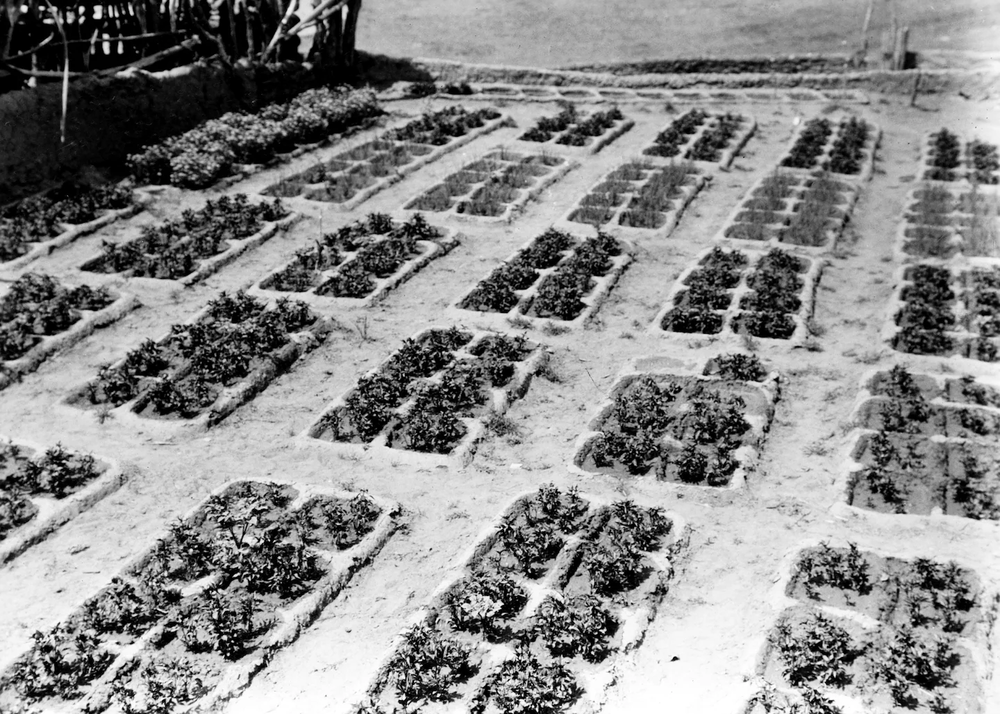
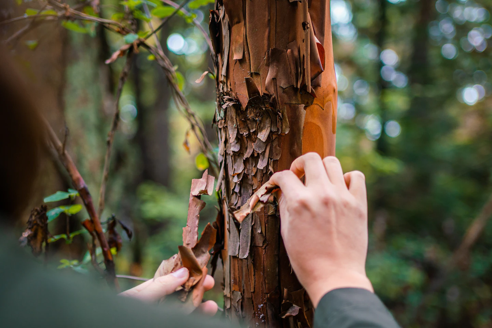
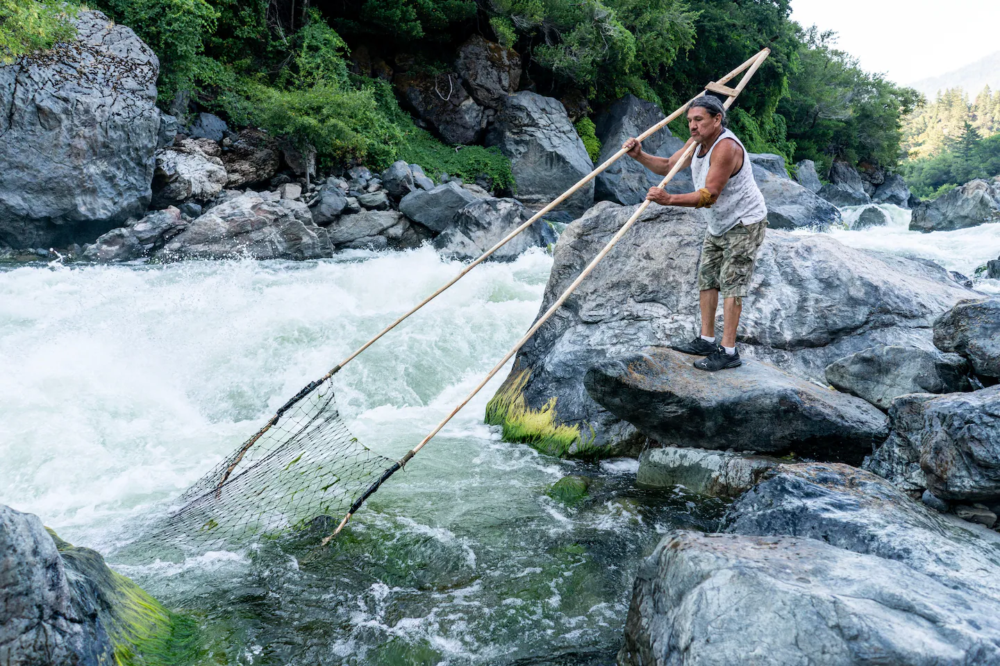
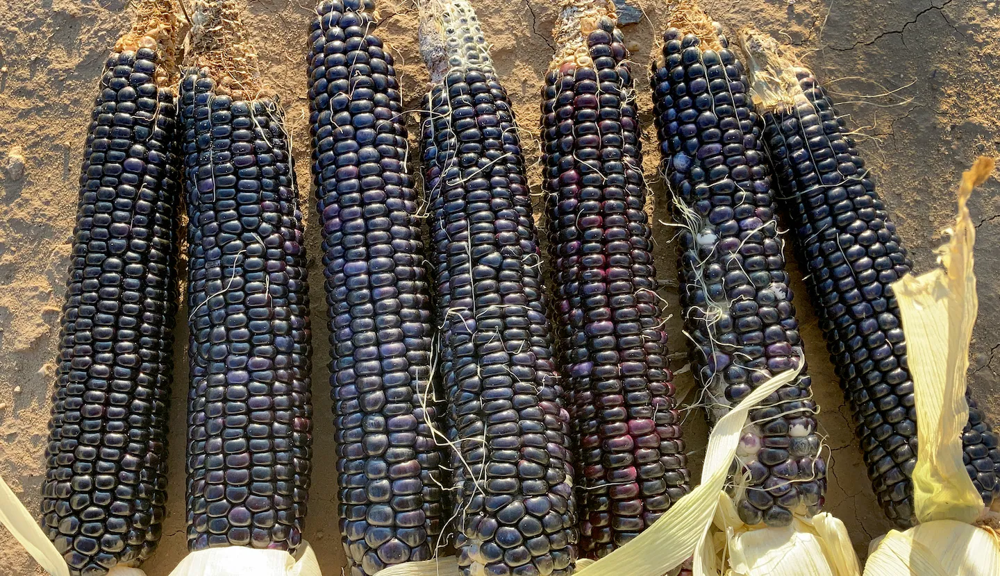
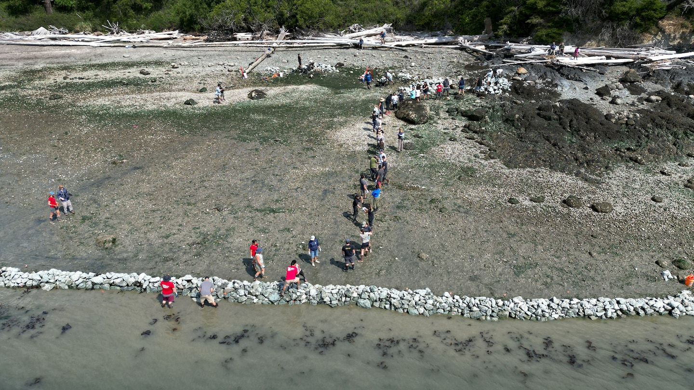
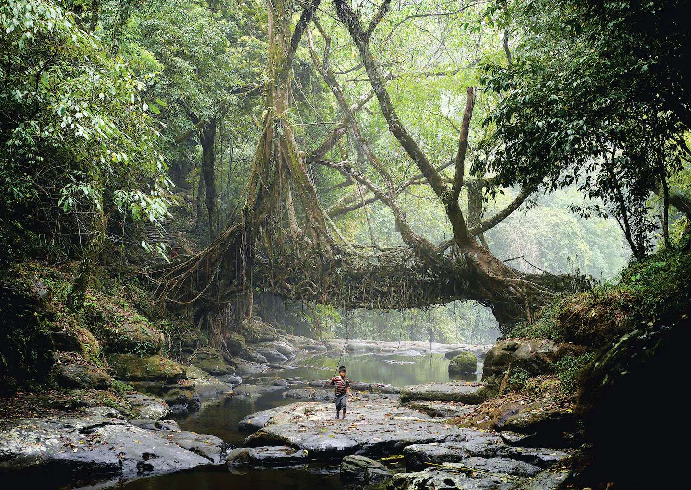

Since the first Earth Day in 1970, the world has experienced profound ecological changes. Wildlife populations have decreased by 69 percent, the result of habitat loss caused by rapid industrialization and changing temperatures. 2023 was the hottest year on record.
Certain ancient practices could mitigate the deleterious effects of global warming. From building seaside gardens to water management in desert terrain, these time-honored practices work with the natural world’s rhythms. Some might even hold the key to a more resilient future and a means of building security for both Indigenous communities and other groups disproportionately impacted by climate change.
Edward S. Curtis photographed the waffle garden design, an example of subsistence farming practiced by the Zuni in the American Southwest, during the 1920s. (Edward S. Curtis/Library of Congress)
Zuni waffle gardens
Jim Enote, 66, has been planting a traditional Zuni waffle garden (or hek’ko:we in the Zuni language) since before he could walk.
“My grandma said I started planting when I was an infant tied to a cradleboard,” said Enote, who grew up on the water-scarce Zuni Pueblo on the southeastern edge of the Colorado plateau. “She put seeds in my baby hands, and I dropped seeds into a hole.”
Enote has continued this ancient garden design, creating rows of sunken squares surrounded by adobe walls that catch and hold water like pools of syrup in a massive earthen waffle. The sustainable design protects crops from wind, reduces erosion and conserves water.
“Water is scarce here and becoming more so every year,” said Enote, referring to the increasing drought and heat caused by climate change. “So, I continue planting waffle gardens.”

Isha Goodwin of the Karuk Tribe uses a pitch stick to light a prescribed fire at the Tishaanik ceremonial grounds. (Xatimniim Drake/Karuk Tribe)
‘Good fire’
Before European settlers traveled to the American West, Indigenous people managed the landscape of northern California with “cultural burns” to improve soil quality, spur the growth of particular plants, and create a “healthy and resilient landscape,” according to the National Park Service.
“The Karuk have developed a relationship with fire over the millennia to maintain and steward a balanced ecosystem,” said Bill Tripp, director of natural resources and environmental policy for the Karuk Tribe. “A good portion of the resources that we depend on, in the natural environment, are dependent on fire.”
But in the mid-19th century, Indigenous burning was outlawed. Not only did that cause the Karuk to lose a vital part of their culture, but also, it invited potentially worse wildfires. The burns had reduced the amount of fuel accidental fires feed on.
“They [forestry agencies] suppressed fire for so long we’re experiencing these massive burns,” said Tripp. A 2023 study published by the Proceedings of the National Academy of Sciences found that 10 of the largest wildfires in California’s history occurred in the last 20 years.
“And, of course, they’re [fires] being exacerbated by climate change,” he said.
“[Indigenous technologies] are really intelligent and capture the DNA of the ecosystem and communities...What’s incredibly sophisticated is a technology shaped by man and nature working together.”
- Julia Watson
Prescribed burning has returned as state and federal agencies recognize the importance of fire in managing forests. In 2022, California passed legislation affirming the right to cultural fire and is considering another bill (backed by the Karuk Tribe) to reduce the barriers to cultural burns on tribal lands.
According to the Karuk Tribe, “Passage of this bill would be an act of cultural and environmental justice.”

An acequia controls part of the Rio Grande in the Bosque del Apache National Wildlife Preserve in New Mexico. (Donatella Davanzo)
Ancient irrigation
In New Mexico, there are 700 functioning acequias, centuries-old community irrigation systems that have helped the parched state build water resilience.
These acequias — a design from North African, Spanish and Indigenous traditions — were established during the 1600s. The name can refer to both the gravity-fed ditches filled with water and the farmers who collectively manage water. Unlike large-scale irrigation systems, water seepage from unlined acequias helps replenish the water table and reduce aridification by adding water to the landscape. The earthen ditches mimic seasonal streams and expand riparian habitats for numerous native species.
“For one, it’s a very good and sustainable system to take water from one source and put it into the community,” said Jorge Garcia, executive director of the Center for Social Sustainable Systems and secretary of the South Valley Regional Association of Acequias. “Without acequias, none of those ecosystems would exist in the way we know them today.”
“We need to maintain those knowledge systems, especially if we continue through dry years,” said Garcia. “We're going to need all of that to survive.”
The peeling bark of a Pacific Madrone on tribal lands in Washington state near the Salish Sea. The Swinomish would use the bark for tea. (Sean Gutierrez)
The original carbon capture technology
U.S. forests are carbon sinks, sequestering up to 10 percent of nationwide CO2 emissions. Indigenous forestry can play a critical role in reducing global warming by restoring biodiversity and health to these ecosystems, including the management of culturally significant plants, animals and fungi that contribute to healthier soil.
“We know that most of the carbon in the forest is stored in the soil, and healthy soil depends on diversity,” said Stephanie Gutierrez, a member of the San Carlos Apache Tribe and the forests and community program director for Ecotrust. “So, when forests are managed for a diversity of species or purpose and management outcomes, this will lead to better climate outcomes as well.”
Yet tribal forestry remains severely underfunded and underutilized on public lands. Indigenous Hawaiians are reintroducing ancient food forests once destroyed by overgrazing, logging and commercial agriculture. These biodiverse edible forests increase food security and build nutrient-dense soils that sequester carbon.
“Just think about that potential if we implemented tribal forestry practices on [not just] tribally owned lands. Adjacent landowners, community forests, national and state forests and parks should also work with tribes to incorporate their techniques,” Gutierrez said.

Michael Kotutwa Johnson walks through a cornfield with Hopi children. (Michael Kotutwa Johnson)
Dryland farming
The Hopi nation in Arizona receives an average of 10 inches of rain per year — a third of what crop scientists say is necessary to grow corn successfully. Yet Hopi farmers have been cultivating corn and other traditional crops without irrigation for millennia, relying on traditional ecological knowledge rooted in life in the high desert.
“I like to call traditional ecological knowledge the things my grandfather taught me,” said Michael Kotutwa Johnson, a Hopi dryland farmer and academic. Hopi farming practices include passive rainwater harvesting, myriad techniques to retain soil moisture, and a reliance on traditional seed varieties superbly adapted to the desert.
“The fact we are able to raise crops such as maize with only 6 to 10 inches of precipitation as opposed to the standard 33 inches of precipitation is outstanding,” Johnson said.
As climate change drives increased drought and heat in the region, Johnson looks to the knowledge and practices that have survived thousands of years of climate extremes. “Our agriculture is integrated into our cultural belief system that has sustained us for millennia,” he said.
Community leader and Karuk elder Ron Reed uses a traditional dipnet fishing frame in search of salmon at Ishi Pishi Falls on the Klamath River in 2023. (Melina Mara/The Washington Post)
Restoring salmon runs
In recent decades, an Indigenous-led plan has begun to restore salmon runs on the Klamath River.
The salmon began to disappear in 1918 when the first of five dams blocked the path of the Chinook salmon as they made their way upstream to spawn.
“The river was cut in half,” said the Yurok Fisheries Department Director Barry McCovey Jr. of the devastating impact the dam had on the salmon runs that Indigenous people depended on. Chinook salmon populations on the Klamath River have since declined by an estimated 90 percent due to habitat loss, poor water quality and climate change.
“We’re seeing the system slowly heat up,” said McCovey, explaining that elevated water temperatures can lead to increased disease and toxic algae blooms. “You layer climate change on top [of habitat loss], and it’s not good news for salmon or anything that relies on a healthy river.”
After removing the dams and implementing a massive river restoration, the salmon are returning. “The river, in its natural state, had that climate change resiliency built into it,” McCovey said.
Ears of Acoma blue corn. (Aaron "Kuuwai" Lowden)
Resilient seeds
Seventy-five percent of global crop diversity has been lost in the past century, further threatening food security as agriculture becomes increasingly vulnerable to climate change.
“Our oral histories and the historical record show extreme droughts,” said Aaron Lowden, a seed keeper and traditional farmer from the Acoma Pueblo, a village west of Albuquerque. “This isn’t the first time they’ve [seeds] been stressed out.”
As former program director for Ancestral Lands and now Indigenous Seedkeepers Network program coordinator at the Native American Food Sovereignty Alliance, Lowden has successfully returned dozens of varieties of traditional arid-adapted seeds such as Acoma blue corn, Acoma pumpkin, Acoma melon and other crops to his pueblo.
For Lowden, building this biodiversity is both a response to climate change and a step in restoring the health and sovereignty of the Acoma people.
“Our people were systemically removed from these lifestyle ways and practices,” said Lowden, who has seen disproportionately higher rates of hunger, diet-related disease and food insecurity in tribal communities. “For me, it’s been trying to dismantle all of that.”
Members of the Swinomish tribe and community volunteers build a clam garden wall in 2022. (Northwest Indian Fisheries Commission)
Swinomish clam gardens
When Swinomish fisherman Joe Williams walked onto the shore of Skagit Bay in Washington to help build the first modern clam garden in the United States, he was overwhelmed with a sense of the past and present colliding. “It was magic, really,” said Williams, who also serves as the community liaison for the Swinomish tribe. “I could feel the presence of my ancestors.”
For thousands of years, the Swinomish built and maintained clam gardens on the coasts of the Pacific Northwest. They constructed rock terraces in low-tide lines to increase shellfish production. The gardens also help the clams weather the impacts of a changing climate by moderating water temperature and expanding habitat threatened by rising seas and ocean acidification.
“That was how [ancestors] provided food for their communities, tending these gardens, living through climate change from then to now,” Williams said.
“We are rediscovering this way of life that sustained our people through past natural climate change events,” he said. “We can utilize the playbook that our ancestors left us in terms of adapting to a fast-changing environment.”
In the damp air of Meghalaya's jungles, the Khasi people have used the trainable roots of rubber trees to grow living bridges over rivers for centuries. This bridge is in the Mawlynnong village in India. (Amos Chapple/Taschen)
Climate-smart Indigenous design
In the field of architecture, Indigenous knowledge and technologies have long been overlooked. Julia Watson’s book “Lo—TEK: Design by Radical Indigenism,” published in 2019, examines Indigenous land management practices that represent a catalogue of sustainable, adaptable and resilient design, from living bridges able to withstand monsoons in northern India to man-made underground streams, called qanats, in what is now Iran.
“Gatekeeping how we technologically innovate for climate resilience by the West can really limit us,” Watson said. “We’re looking for solutions that can adapt to climate extremes and huge fluctuations. These Indigenous technologies evolved from those conditions, molded by huge fluctuations, extreme fire events, water and food scarcity, and flood events.”
Some of the techniques and solutions work with nature instead of attempting to conquer it.
“[Indigenous technologies] are really intelligent and capture the DNA of the ecosystem and communities,” Watson said. “What’s incredibly sophisticated is a technology shaped by man and nature working together.”